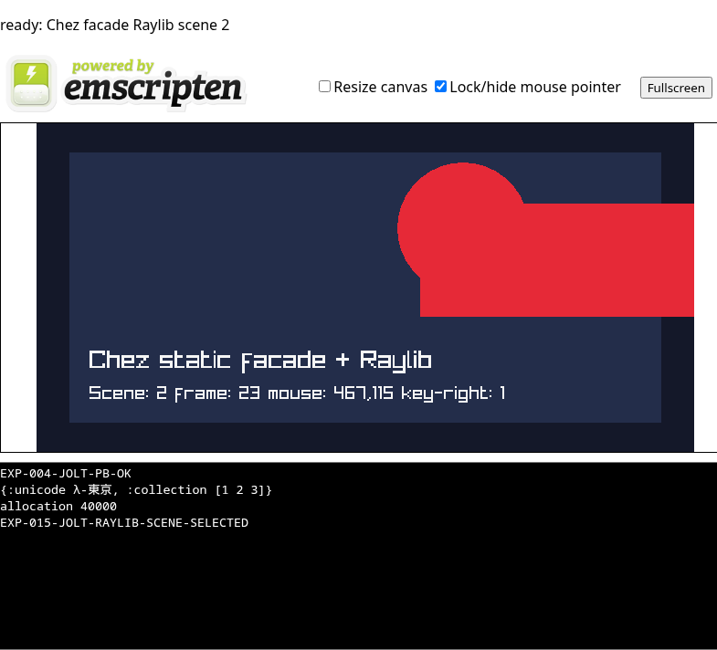

What this demonstrates
Observed
Chromium reported crossOriginIsolated and SharedArrayBuffer, canonical Jolt output, scene readiness, real mouse dispatch, and ArrowRight dispatch with no page errors.
Ownership boundary
Jolt selects scalar scene/input state through jolt.ffi. The C façade and Raylib own drawing, input polling, and browser frame scheduling.
Not claimed
This is not the desktop raylib-jlt binding running unchanged, nor per-frame Jolt execution. It is the narrow ABI-proven route documented by EXP-015.
Jolt source used by this build
The published runtime was minted with app.exp015-input-keys. It selects input mode and scene through the proven signed-scalar ABI; drawing and input polling remain in the C-owned Raylib loop.
(ns app.exp015-input-keys
(:require [jolt.ffi :as ffi]
[app.witness :as witness]))
;; The C facade owns Raylib's browser frame loop;
;; Jolt selects its initial input mode and scene.
(declare project-set-scene project-set-input-mode)
(ffi/defcfn project-set-scene "project_set_scene" [:int32] :int32)
(ffi/defcfn project-set-input-mode "project_set_input_mode" [:int32] :int32)
(defn -main [& args]
(when-not (= 1 (project-set-input-mode 1))
(throw (ex-info "EXP-015 input mode selection failed" {})))
(when-not (= 2 (project-set-scene 2))
(throw (ex-info "EXP-015 scene selection failed" {})))
(apply witness/-main args)
(println "EXP-015-JOLT-RAYLIB-SCENE-SELECTED"))
The invoked app.witness namespace emits the canonical collection, Unicode, and allocation-pressure output shown by the runtime.
Actual Raylib scene and frame loop
This is the scene implementation linked into the published Wasm module, excerpted from the reproducible EXP-015 C façade patch. It is C—not JavaScript—that polls Raylib input and draws each browser frame.
static int32_t project_scene = 1;
static unsigned int project_frame = 0;
static int32_t project_input_mode = 0;
static int32_t project_set_input_mode(int32_t mode) {
project_input_mode = mode;
return project_input_mode;
}
static int32_t project_set_scene(int32_t scene) {
project_scene = scene;
return project_scene;
}
static void project_draw_frame(void) {
int mouse_x = project_input_mode ? GetMouseX() : 180;
int mouse_y = project_input_mode ? GetMouseY() : 150;
int key_shift = project_input_mode && IsKeyDown(KEY_RIGHT) ? 100 : 0;
Color accent = project_scene == 2
? (Color){230, 41, 55, 255}
: (Color){0, 228, 48, 255};
BeginDrawing();
ClearBackground((Color){20, 24, 41, 255});
DrawRectangle(36, 32, 648, 296, (Color){35, 45, 74, 255});
DrawCircle(mouse_x, mouse_y, 72, accent);
DrawRectangle(320 + key_shift, 88, 300, 124, accent);
DrawText("Chez static facade + Raylib", 58, 246, 28, RAYWHITE);
DrawText(TextFormat(
"Scene: %d frame: %u mouse: %d,%d key-right: %d",
project_scene, project_frame, mouse_x, mouse_y, key_shift != 0),
58, 286, 20, RAYWHITE);
EndDrawing();
project_frame++;
if (project_frame == 1) project_ready(project_scene);
}
static void project_start_raylib(void) {
SetTraceLogLevel(LOG_ERROR);
InitWindow(720, 360, "Chez Raylib static facade");
emscripten_set_main_loop(project_draw_frame, 0, 1);
}
Jolt selects
The Jolt entry calls the registered signed-int32 functions. Mode 1 enables live input and scene 2 selects the red accent.
Raylib updates
GetMouseX/Y moves the circle. IsKeyDown(KEY_RIGHT) adds 100 pixels to the rectangle position while the key is held.
Browser schedules
emscripten_set_main_loop gives browser scheduling to the C/Raylib owner. The first completed frame publishes the readiness marker used by automation.
Verified browser capture

Sources: EXP-015 findings · raylib-jlt live-Wasm proposal · published artifact hashes.